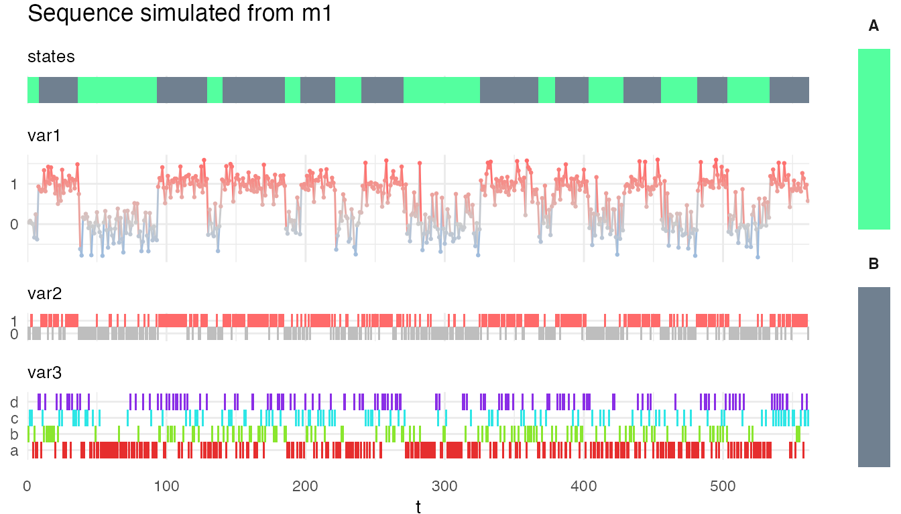
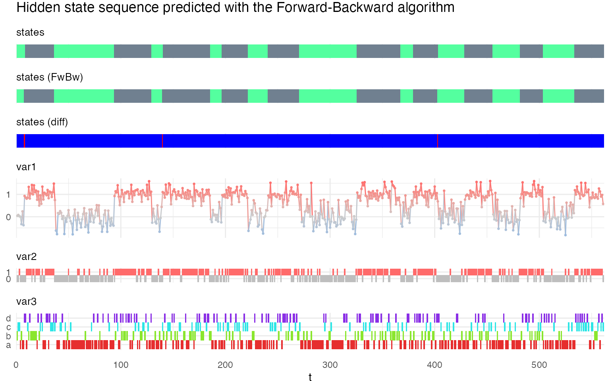
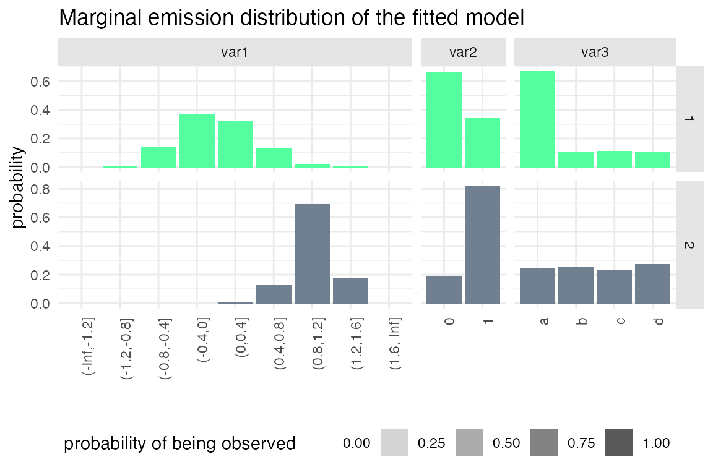

Main functions
This package comes with 4 main functions which can be used to specify a model (specify_hsmm()), simulate sequences from a model (simulate_hsmm()), predict the hidden states given a sequence of observations (predict_state_hsmm()), and fit a model to sequences of observation (fit_hsmm()). They are detailed below and demonstrated in the next sections.
specify_hsmm(): Model specification. Takes as input the number of states (J), the model graph and transition probabilities (trans), the sojourn distribution (sojourn), the emission parameter (emission.par). Optional inputs include a data augmentation function (augment_data_fun), names and colors associated with each states (state_names and state_colors). Returns a list of class hsmm.
simulate_hsmm(): Simulate data given a hsmm model. The length or number of state transition can be specified as input.
-
predict_hsmm_states(): Sequence decoding. Takes as input a hsmm model and one or more sequences of observations (X) and returns the decoded state sequence. Two methods are available for the decoding:
Viterbi algorithm (method = "viterbi"): returns the most likely sequence of state given the whole sequence of the observations.
Forward-Backward algorithm (method = "smoothed"): returns the probability of each state at each time-point given the whole sequence of observation.
-
fit_hsmm(): Fits an hsmm model to increase the likelihood of decoding a provided sequence. This function uses on an EM approach.
At the E-step, the sequence is decoded with the current model parameters (initial and transition probabilities, sojourn distributions and emission distributions) with the Forward-Backward algorithm.
At the M-step, the model parameters are re-estimated based on the posterior state probabilities returned in the E-steps.
These functions are demonstrated in the sections below with several examples.
Visualization functions
The package also comes with a series of visualization functions
plot_hsmm_seq() plots a sequence of observations. If states are provided with the sequence, the state sequences are plotted on top of the observations. Several state sequences can be provided (e.g. the ground truth and the decoded state sequence). If two state sequences are provided, the function automatically displays the difference between the two state sequence in addition to the two state sequences.
plot_hsmm_marg_dist() plots the marginal distributions \(\Pr(X_k|S_j)\) of each variable in each state. The transparency of the histograms is proportional to the probability for this variable to be observed in a given state.
plot_hsmm_sojourn_dist() plots the sojourn distributions of each states.
plot_hsmm_transitions() plots the model graph with edges width proportional to the transition probabilities between two states.
See sections below for examples of these functions.
Manual labelling / validation of decoding shiny app.
Finally, the function label_sequences() calls an interactive app that opens in a web browser and can be used to add manual labels to sequences. It can also be used to validate an existing decoding (e.g. results from predict_hsmm_states()).
Example 1: a simple 2-state, 3-variable model with no missing data.
Model specification
The specification of a hidden semi-Markov model requires the number of state, the initial probabilities (i.e. the probability for each state to start a state sequence), the transition probabilities (i.e. the probabilities to switch from one state to another), the sojourn distributions for each state (parametric or non-parametric distributions) and the marginal emission probabilities (i.e. the distributions of values of each variables in each state). Note that, while we do not specify joint distributions for the different values, potential within-state dependencies between variables can be learned at the initialization step if labeled data is provided or when fitting the model to sequences.
We will here use a simple 2-state 3-variable toy model to provide an example of a model specification. We temporarily use a list to store the model parameters before the actual use of the specify_hsmm() function.
States
J is the number of states of the model. We define a model with two hidden states.
(Optional) These states can be names, e.g. “A” and “B”, and be allocated specific colors.
m1_param_list$state_names = c("A","B")
m1_param_list$state_colors = c("seagreen1","slategray")
Initial and transition probabilities
Initial probabilities are defined as a vector of length J.
m1_param_list$init = c(0.9, 0.1)
Transition probabilities are defined as a (J x J) matrix where the rows are the 'from' states and the columns are the 'to' states. Rows must sum to 1 and the diagonal must be filled with zeros as the probabilities of staying in a given state is defined in the sojourn distributions.
m1_param_list$trans = matrix(c(0,1,1,0), nrow = m1_param_list$J, ncol = m1_param_list$J)
Sojourn distributions
Sojourn distributions can be defined as parametric or non-parametric distributions. Supported distributions are provided in the table below.
Supported sojourn distributions
|
distribution_type
|
parameters
|
|
nonparametric
|
d
|
|
ksmoothed_nonparametric
|
d
|
|
gamma
|
shape, scale
|
|
poisson
|
shift, lambda
|
|
lnorm
|
meanlog, sdlog
|
|
logarithmic
|
shape
|
|
nbinom
|
size, mu or prob, shift
|
Sojourn distributions are specified by a list. This list can either have one element per state if states are described by different distribution type or with a more compact list if all states can be described by the same distribution family with different parameters for each state. Here we demonstrate the latter case but additional examples are found in the next sections.
When specifying the sojourns with the same distribution family for all states, the list starts with a 'type' element whose value is a string specifying the type of sojourn distributions. The other elements of the list specify the parameters of the distributions and their name depends on the distribution type chosen. If the sojourn is specified as a non-parametric distribution, the other element in the list is a matrix d of dimension (M x J) where M is the length of the longest sojourn.
Here, we define the sojourn distributions of the toy model as gamma distributions.
m1_param_list$sojourn = list(type = "gamma",
shape = c(2,10),
# the shape of the gamma distribution of state 1 is 2,
# and the shape for state 2 is 10
scale = c(10,3)
# the scale is 10 for the state 1 distribution and
# is 3 for the state 2 distribution
)
Emission parameters
Because we wanted the package to be able to decode time-series with variables of different types (continuous, discrete, binary and categorical), the emission probabilities are provided independently for each variable. This makes the assumption that the variables are independent within a given state. However, potential within-state dependencies may be learned when fitting the model to data.
The marginal emission distributions \(\Pr(X_k|S_j)\) can be described as parametric (continuous or discrete) or non-parametric (e.g. for categorical variables). Currently, the package supports normal (norm), beta (beta), binomial (binom) and non-parametric (non-par) distributions.
To check the currently supported emission distribution and how to specify them, one can use the function available_marginal_emission_dist().
Available marginal emission distributions
|
type
|
distribution
|
params
|
parameter_type
|
parameter_size
|
|
continuous
|
norm
|
mean
|
double
|
J
|
|
continuous
|
norm
|
sd
|
double
|
J
|
|
continuous
|
beta
|
shape1
|
double >=0
|
J
|
|
continuous
|
beta
|
shape2
|
double >=0
|
J
|
|
discrete
|
binom
|
size
|
int
|
J
|
|
discrete
|
binom
|
prob
|
double [0,1]
|
J
|
|
categorical
|
non-par
|
values
|
character
|
NV
|
|
categorical
|
non-par
|
probs
|
double [0,1]
|
NV x J
|
For our m1 model, we define three variables, each of a different distribution family.
m1_param_list$emission_dist = list(
var1 = list(
type = "norm",
params = list(
mean = c(0,1),
sd = c(0.4,0.2)
)
),
var2 = list(
type = "binom",
params = list(
size = rep(1,2),
prob = c(0.2,0.8)
)
),
var3 = list(
type = "non-par",
params = list(
values = c("a","b","c","d"),
probs = matrix(c(0.7,0.1,0.1,0.1,
1/4,1/4,1/4,1/4), 4,m1_param_list$J)
)
)
)
Model specification
We can now specify the model with the specify_hsmm() function.
m1 = specify_hsmm(
J = m1_param_list$J,
state_names = m1_param_list$state_names,
state_colors = m1_param_list$state_colors,
init = m1_param_list$init,
transition = m1_param_list$trans,
sojourn = m1_param_list$sojourn,
marg_em_probs = m1_param_list$emission_dist)
class(m1)
#> [1] "hsmm"
Visualization of the specified model

plot_hsmm_marg_dist(model = m1, show_missing_probs = FALSE) +
ggtitle("Marginal emission distributions")
Sequence simulation
Now that we have specified our model, we can simulate sequences with the simulate_hsmm() function.
We can visualize the simulated sequence with the plot_hsmm_seq() function.
plot_hsmm_seq(X = X, model = m1,
add_state_color_legend = TRUE,
title = "Sequence simulated from m1")
 And get a compact view (heatmap) of the sequence with the option compact_view.
plot_hsmm_seq(X = X, model = m1,
compact_view = TRUE,
title = "Sequence simulated from m1 (compact view)")
Sequence decoding
There are two methods available to infer the sequence of hidden state: the Viterbi method, which provides the most likely hidden state sequence, and the Forward-Backward method, which provides the state probabilities at each time-point.
Both methods are available in the predict_states_hsmm() function, accessible with the method argument.
predict_hsmm_states() returns a list with three tables:
-
state_seq a data.frame with three columns:
seq_id (the ID of the sequences, same as in X),
t the time-point (same as in X) and
state the most probable hidden state at that time-points.
-
loglik a data.frame with two columns:
-
probabilities, a table of 4 (Viterbi) or 5 (Forward-Backward) columns:
seq_id
t
state
obs_prob: the probability of the observations in that state (i.e. \(\Pr(X_i| S_j)\))
state_prob (only when calling the function with the FwBw method) : the state probability given the whole observation sequence (i.e. \(\Pr(S_j| X)\))
plot_hsmm_seq(
X = X %>% left_join(.,
viterbi$state_seq %>%
select(seq_id, t, state) %>%
rename(state_Viterbi = state),
by = c("seq_id","t")),
model = m1,
title = "Hidden state sequence predicted with the Viterbi algorithm"
)
plot_hsmm_seq(
X = X %>% left_join(.,
fwbw$state_seq %>%
select(seq_id, t, state) %>%
rename(state_FwBw = state),
by = c("seq_id","t")),
model = m1,
title = "Hidden state sequence predicted with the Forward-Backward algorithm"
)

Fitting a HSMM model
The fit_hsmm() function can be used to fit a model to a sequence or a series of sequences. This means that the model parameters (initial probabilities, transition probabilities, sojourn distributions and emission distributions) are adjusted so that the likelihood of the sequences is maximized. The fit_hsmm() function relies on the EM (expectation maximization) algorithm in which the E-step followed the M-step are repeated until the change in likelihood is marginal. In the E-step, the sequences are decoded using the Forward-Backward algorithm so that the probabilities of each hidden state are computed. In the M-step, the model parameters are adjusted using these probabilities to maximize the likelihood of the observations.
To demonstrate this function, we modify the simulated sequence and fit the model to this modified sequence.
Xmod = bind_rows(X, X) # we repeat the sequence to have a longer sequence
j = sample(which(Xmod$state == 2), 100) # we remove time-points from the state 2 to modify the sojourn distributions
Xmod = Xmod[-j,]
Xmod$t = 1:nrow(Xmod)
Xmod$var2[sample(which(Xmod$state == 1), 100)] = 1
fit_results = fit_hsmm(X = Xmod, model = m1)
plot_hsmm_fit_status(fit_output = fit_results)


plot_hsmm_marg_dist(model = m1) +
ggtitle("Marginal emission distribution of the specified model")
plot_hsmm_marg_dist(model = fit_results$model) +
ggtitle("Marginal emission distribution of the fitted model")

Example 2: Specifying sojourns
In this section, we look at how sojourn distributions can be specified. In this package, they can be specified as parametric or non-parametric distributions. Several parametric distributions are supported such as Gamma, Poisson, negative binomial, etc. In addition, sojourns can be specified such as they follow the same type of distribution in all states (e.g. the sojourns of all states follow a Gamma distribution) or with distinct distributions for each state (e.g. the sojourns of one state follow a gamma distribution while the sojourn of another state follow a shifted poisson distribution). We illustrate these differences with examples below.
The list of currently supported sojourn distribution is available by typing:
available_sojourn_dist()
#> distribution_type parameters
#> 1 nonparametric d
#> 2 ksmoothed_nonparametric d
#> 3 gamma shape, scale
#> 4 poisson shift, lambda
#> 5 lnorm meanlog, sdlog
#> 6 logarithmic shape
#> 7 nbinom size, mu or prob, shift
Parametric vs non-parametric sojourns.
Here, we specify three models: ms1, ms2 and ms3. In ms1, the sojourn distributions are specified as Gamma distributions, while in ms2 and ms2, they are specified as non-parametric and k-smoothed non-parametric distributions. Both non-parametric distributions are specified with the exact same shape than the Gamma distribution such that the sojourn distributions are effectively identical for all three models.
ms1_param_list = m1
ms1_param_list$sojourn = list(type = "gamma",
shape = c(2,10),
scale = c(4,2))
ms1 = specify_hsmm(
J = ms1_param_list$J,
state_names = ms1_param_list$state_names,
state_colors = ms1_param_list$state_colors,
init = ms1_param_list$init,
transition = ms1_param_list$transition,
sojourn = ms1_param_list$sojourn,
marg_em_probs = ms1_param_list$marg_em_probs)
ms2_param_list = m1
ms2_param_list$sojourn = list(type = "nonparametric",
d = cbind(dgamma(1:100, shape = 2, scale = 4),
dgamma(1:100, shape = 10, scale = 2)))
ms2 = specify_hsmm(
J = ms2_param_list$J,
state_names = ms2_param_list$state_names,
state_colors = ms2_param_list$state_colors,
init = ms2_param_list$init,
transition = ms2_param_list$transition,
sojourn = ms2_param_list$sojourn,
marg_em_probs = ms2_param_list$marg_em_probs)
#> Warning in .check_sojourn_all_states(sojourn, J): The provided sojourn
#> distributions do not sum to 1 for at least one state. Sojourn distributions are
#> normalized so that they sum to 1.
ms3_param_list = m1
ms3_param_list$sojourn = list(type = "ksmoothed_nonparametric",
d = cbind(dgamma(1:100, shape = 2, scale = 4),
dgamma(1:100, shape = 10, scale = 2)))
ms3 = specify_hsmm(
J = ms3_param_list$J,
state_names = ms3_param_list$state_names,
state_colors = ms3_param_list$state_colors,
init = ms3_param_list$init,
transition = ms3_param_list$transition,
sojourn = ms3_param_list$sojourn,
marg_em_probs = ms3_param_list$marg_em_probs)
#> Warning in .check_sojourn_all_states(sojourn, J): The provided sojourn
#> distributions do not sum to 1 for at least one state. Sojourn distributions are
#> normalized so that they sum to 1.
g1 = plot_hsmm_sojourn_dist(ms1) + ggtitle("Sojourns specified as Gamma distributions")
g2 = plot_hsmm_sojourn_dist(ms2) + ggtitle("Sojourns specified as non-parametric distributions")
g3 = plot_hsmm_sojourn_dist(ms3) + ggtitle("Sojourns specified as k-smoothed non-parametric distributions")
ggarrange(g1, g2, g3, nrow = 3, ncol = 1)
When we simulate sequences with these three models with the same seed, we obtain virtually the same sequence of states and observations.
X1 = simulate_hsmm(model = ms1, seed = 10, n_state_transitions = 20)
X2 = simulate_hsmm(model = ms2, seed = 10, n_state_transitions = 20)
X3 = simulate_hsmm(model = ms3, seed = 10, n_state_transitions = 20)
g1 = plot_hsmm_seq(X = X1, model = ms1, compact_view = TRUE,
title = "Sojourns specified as Gamma distributions")
g2 = plot_hsmm_seq(X = X2, model = ms2, compact_view = TRUE,
title = "Sojourns specified as non-parametric distributions")
g3 = plot_hsmm_seq(X = X3, model = ms3, compact_view = TRUE,
title = "Sojourns specified as k-smoothed non-parametric distributions")
ggarrange(g1, g2, g3, nrow = 3, ncol = 1)

However, when we fit the model to these sequences, the updated (fitted) sojourn distributions are different because the sojourns of model ms1 are constrained to be described by Gamma distributions, while the sojourns of models ms2 and ms3 are unconstrained. In model ms3, the distributions are kept smooth but are not constrained to follow any specific distribution.
ms1_fitted = fit_hsmm(model = ms1, X = X1)
ms2_fitted = fit_hsmm(model = ms2, X = X1)
ms3_fitted = fit_hsmm(model = ms3, X = X1)
g0 = plot_hsmm_sojourn_dist(model = ms1) +
ggtitle("Specified sojourn distributions")
g1 = plot_hsmm_sojourn_dist(model = ms1_fitted$model) +
ggtitle("Fitted sojourn distributions specified as Gamma distributions")
g2 = plot_hsmm_sojourn_dist(model = ms2_fitted$model) +
ggtitle("Fitted sojourn distributions specified as non-parametric distributions")
g3 = plot_hsmm_sojourn_dist(model = ms3_fitted$model) +
ggtitle("Fitted sojourn distributions specified as k-smoothed non-parametric distributions")
ggarrange(g0, g1, g2, g3, nrow = 4, ncol = 1)
Using Bayesian updating when re-estimating the sojourn distributions
Depending on the confidence that one has on the specified sojourn distributions, it may be useful to use the specified distribution as prior on the sojourn distributions when fitting a model to a sequence of data. We show here the impact of using such a prior on the fitted sojourn distributions.
ms1_fitted_prior = fit_hsmm(model = ms1, X = X1, use_sojourn_prior = TRUE)
ms2_fitted_prior = fit_hsmm(model = ms2, X = X1, use_sojourn_prior = TRUE)
ms3_fitted_prior = fit_hsmm(model = ms3, X = X1, use_sojourn_prior = TRUE)
g1_no_prior = plot_hsmm_sojourn_dist(model = ms1_fitted$model) +
ggtitle("Gamma sojourn distributions fitted without prior")
g1_prior = plot_hsmm_sojourn_dist(model = ms1_fitted_prior$model) +
ggtitle("Gamma sojourn distributions fitted with prior")
ggarrange(g1_no_prior, g1_prior, ncol = 1)
g2_no_prior = plot_hsmm_sojourn_dist(model = ms2_fitted$model) +
ggtitle("Non-parametric sojourn distributions fitted without prior")
g2_prior = plot_hsmm_sojourn_dist(model = ms2_fitted_prior$model) +
ggtitle("Non-parametric sojourn distributions fitted with prior")
ggarrange(g2_no_prior, g2_prior, ncol = 1)
g3_no_prior = plot_hsmm_sojourn_dist(model = ms3_fitted$model) +
ggtitle("K-smoothed non-parametric sojourn distributions fitted without prior")
g3_prior = plot_hsmm_sojourn_dist(model = ms3_fitted_prior$model) +
ggtitle("K-smoothed non-parametric sojourn distributions fitted with prior")
ggarrange(g3_no_prior, g3_prior, ncol = 1)
Different sojourn distribution families for each state
While non-parametric distributions allow for drastically different distributions for each state, it may be convenient to constrain the sojourn distributions to distribution families specific to each state.
Here, we define two models: msd1 and msd2. The sojourns of msd1 are specified as Gamma distributions for both state, while the sojourns of the msd2 are specified as a Poisson for the first state and a Gamma for the second state. The parameters of the sojourn distributions are chosen such that the specified distributions of both models are very similar.
msd1_param_list = m1
msd1_param_list$sojourn = list(type = "gamma",
shape = c(1,10),
scale = c(1,2))
msd1 = specify_hsmm(
J = msd1_param_list$J,
state_names = msd1_param_list$state_names,
state_colors = msd1_param_list$state_colors,
init = msd1_param_list$init,
transition = msd1_param_list$transition,
sojourn = msd1_param_list$sojourn,
marg_em_probs = msd1_param_list$marg_em_probs)
msd2_param_list = m1
msd2_param_list$sojourn = list(
A = list(type = "poisson", lambda = 1, shift = 0),
B = list(type = "gamma", shape = 10, scale = 2)
)
msd2 = specify_hsmm(
J = msd2_param_list$J,
state_names = msd2_param_list$state_names,
state_colors = msd2_param_list$state_colors,
init = msd2_param_list$init,
transition = msd2_param_list$transition,
sojourn = msd2_param_list$sojourn,
marg_em_probs = msd2_param_list$marg_em_probs)
g1 = plot_hsmm_sojourn_dist(model = msd1) + ggtitle("Sojourn distributions specified as Gamma distributions for both state.")
g2 = plot_hsmm_sojourn_dist(model = msd2) + ggtitle("Sojourn distributions specified as Poisson (A) and Gamma (B)")
ggarrange(g1, g2, ncol = 1)
Simulations from these two models lead to very similar sequences.
X1 = simulate_hsmm(model = msd1, seed = 10, n_state_transitions = 20)
X2 = simulate_hsmm(model = msd2, seed = 10, n_state_transitions = 20)
g1 = plot_hsmm_seq(X = X1, model = msd1,
compact_view = TRUE,
title = "Sojourn distributions specified as Gamma for both states")
g2 = plot_hsmm_seq(X = X2, model = msd2,
compact_view = TRUE,
title = "Sojourn distributions specified as Poisson (A) and Gamma (B)")
ggarrange(g1, g2, ncol = 1)
However, when fitting the model to the sequences, the fitted sojourns become different depending on how they have been specified.
msd1_fitted = fit_hsmm(model = msd1, X = X1)
msd2_fitted = fit_hsmm(model = msd2, X = X1)
g0 = plot_hsmm_sojourn_dist(model = msd1) +
ggtitle("Specified sojourn distributions")
g1 = plot_hsmm_sojourn_dist(model = msd1_fitted$model) +
ggtitle("Fitted sojourn distributions specified as Gamma distributions for both states")
g2 = plot_hsmm_sojourn_dist(model = msd2_fitted$model) +
ggtitle("Fitted sojourn distributions specified as Poisson (A) and Gamma (B) distributions")
ggarrange(g0, g1, g2, ncol = 1)
Modelling missing data: censoring probabilities
In this section, we will demonstrate the different options of to model or account for missing data. In this package, the probabilities of missing data can be specified in two ways: (1) one can specify the probability that all variables are missing at a given time-point in each state (missing time-points), and (2) one can specify the probability that a specific variable is missing at a given time-point in each state.
Censoring probabilities are specified with a list of two elements, p and q. p is a vector of length J with the probability of missing time-points in each state, while q is a matrix of dimension NV x J where J is the number of states and NV the number of variables.
\[p_j = P(\mathbf{X} = \varnothing | S = j)\]
\[q_{k,j} = P(X_k = \varnothing | S = j) \]
If the censoring probabilities are not specified, sequences are simulated assuming data are never missing, but sequences with missing data can still be decoded and the most likely sequence of hidden state is predicted assuming that variables are missing at random with a probability of 0.5 in all states.
We use the examples below to illustrate these differences.
Modelling the absence of missing data
Here, we compare two models. In the first model (mm1), the censoring (missing) probabilities are not specified and in the second model (mm2), the censoring probabilities are specified such that there are no missing time-points.
mm1_param_list = m1
mm1_param_list$censoring_probs = NULL
mm1 = specify_hsmm(
J = mm1_param_list$J,
state_names = mm1_param_list$state_names,
state_colors = mm1_param_list$state_colors,
init = mm1_param_list$init,
transition = mm1_param_list$transition,
sojourn = mm1_param_list$sojourn,
marg_em_probs = mm1_param_list$marg_em_probs,
censoring_probs = mm1_param_list$censoring_probs)
mm2_param_list = m1
mm2_param_list$censoring_probs = list(p = c(0,0))
mm2 = specify_hsmm(
J = mm2_param_list$J,
state_names = mm2_param_list$state_names,
state_colors = mm2_param_list$state_colors,
init = mm2_param_list$init,
transition = mm2_param_list$transition,
sojourn = mm2_param_list$sojourn,
marg_em_probs = mm2_param_list$marg_em_probs,
censoring_probs = mm2_param_list$censoring_probs)
Simulating sequences with these two models lead to exactly the same sequences in which no time-point is missing.
X1 = simulate_hsmm(model = mm1, seed = 10, n_state_transitions = 20)
X2 = simulate_hsmm(model = mm2, seed = 10, n_state_transitions = 20)
g1 = plot_hsmm_seq(X = X1, model = mm1, compact_view = TRUE,
title = "Missing probabilities not specified")
g2 = plot_hsmm_seq(X = X2, model = mm2, compact_view = TRUE,
title = "Missing probabilities specified to 0")
ggarrange(g1, g2, ncol = 1)
The difference between these two models is that the probability of missing time-points was explicitly specified to 0 in mm2. Therefore, mm2 is unable to decode time-series in which time-points are missing. On the other hand, since the missing probabilities were not specified in mm1, our package makes the assumption that each variable could be missing in any state.
To illustrate this, we modify the simulated sequence to add missing time-points and use the predict_states_hsmm function to decode this sequence with each model.
X1_with_missing = X1
j = sample(1:nrow(X1), 200)
X1_with_missing$var1[j] = NA
X1_with_missing$var2[j] = NA
X1_with_missing$var3[j] = NA
# plot_hsmm_seq(X = X1_with_missing, model = mm1)
vit1 = predict_states_hsmm(model = mm1, X = X1_with_missing, method = "Viterbi")
# vit2 = predict_states_hsmm(model = mm2, X = X1_with_missing, method = "Viterbi")
# the previous line throws an error because missing data are specified as impossible
Below, we compare the predicted hidden states on the sequence with or without missing variables.
vit1_no_missing = predict_states_hsmm(model = mm1, X = X1, method = "Viterbi")
plot_hsmm_seq(X = X1_with_missing %>%
left_join(.,
vit1$state_seq %>%
rename(state_Vitebi_with_missing_tp = state),
by = c("seq_id", "t")) %>%
left_join(.,
vit1_no_missing$state_seq %>%
rename(state_Vitebi_without_missing_tp = state),
by = c("seq_id", "t")) ,
model = mm1)
Because the number of missing time-point was limited, the predicted sequence of hidden states is very similar when predicted from the sequence with or without missing time-points.
When a model in which the missing probabilities are not specified is fitted to a sequence with missing time-points, the missing probabilities are learned from the sequence.
To illustrate this, we modify again the original simulated sequence, this time, making sure to remove time-points only in state “B”.
X1_with_missing_B = X1
j = sample(which(X1$state == 2), 150)
X1_with_missing_B$var1[j] = NA
X1_with_missing_B$var2[j] = NA
X1_with_missing_B$var3[j] = NA
mm1_fitted = fit_hsmm(mm1, X = X1_with_missing_B)
g1 = plot_hsmm_marg_dist(model = mm1) +
ggtitle("Marginal emission probabilities of the specified model")
g2 = plot_hsmm_marg_dist(model = mm1_fitted$model) +
ggtitle("Marginal emission probabilities of the fitted model")
ggarrange(g1, g2, ncol = 1)
In the bottom plot, the transparency of the histograms reflects a higher probability of the variables being missing in state 2 (B).
Modelling state-specific missing time-points
To model that time-points may be more frequently missing in some states, the missing probability \(p\) can be specified with a vector of length \(J\).
Here, we compare the sequences simulated with two models: mm1 in which the missing probabilities are not specified and mp in which the missing probabilities p are specified such that time-points are more likely to be missing in state 2 (B) than state 1 (A).
mp_param_list = mm1
mp_param_list$censoring_probs = list(p = c(0.2,0.5))
mp = specify_hsmm(
J = mp_param_list$J,
state_names = mp_param_list$state_names,
state_colors = mp_param_list$state_colors,
init = mp_param_list$init,
transition = mp_param_list$transition,
sojourn = mp_param_list$sojourn,
marg_em_probs = mp_param_list$marg_em_probs,
censoring_probs = mp_param_list$censoring_probs)
X1 = simulate_hsmm(model = mm1, seed = 10, n_state_transitions = 20)
X2 = simulate_hsmm(model = mp, seed = 10, n_state_transitions = 20)
g1 = plot_hsmm_seq(X = X1, model = mm1, compact_view = TRUE,
title = "Missing probabilities not specified")
g2 = plot_hsmm_seq(X = X2, model = mp, compact_view = TRUE,
title = "Missing time-point probabilities specified")
ggarrange(g1, g2, ncol = 1)
If one fits mm1 on the sequence simulated with mp, the missing probabilities are learned.
mm1_fitted = fit_hsmm(model = mm1, X = X2)
mm1_fitted$model$obs_probs %>% filter(is.na(var1), is.na(var2), is.na(var3))
#> # A tibble: 2 x 6
#> state var1 var2 var3 p p0
#> <int> <fct> <int> <chr> <dbl> <dbl>
#> 1 1 <NA> NA <NA> 0.208 0
#> 2 2 <NA> NA <NA> 0.477 0
Modeling state-specific missing variables
Instead of modeling the missing probabilities of a complete time-point, one can specify the missing probabilities of specific variables in specific states.
Here we compare three models to illustrate the impact of changing p or q when specifying the missing probabilities.
In mq1, the probability of missing time-points (p) is specified such that time-points are missing with a probability of 0.2 in state 1 (A) and 0.5 in state 2 (B). The individual probability of missing variables is set to 0. Altogether, that means that if one variable is missing, they are all missing. If one is observed, they are all observed.
In mq2, the probability of missing time-points is set to 0, but the probabilities of missing variables is specified such that they are all missing with the same probability given the state. This means that one variable could be missing while the others are present. And that their missingness is independent (they could all be missing with a probability equal to the product of each being missing).
In mq3, the probability of missing time-points is also set to 0, while each variable may be missing with a specific probability. In comparison with mq2 where all variables had the same missing probabilities given the state, here one variable is more likely to be missing in one state, while the second variable is more likely to be missing in another state.
mq1_param_list = m1
mq1_param_list$censoring_probs = list(p = c(0.2,0.5))
mq1 = specify_hsmm(
J = mq1_param_list$J,
state_names = mq1_param_list$state_names,
state_colors = mq1_param_list$state_colors,
init = mq1_param_list$init,
transition = mq1_param_list$transition,
sojourn = mq1_param_list$sojourn,
marg_em_probs = mq1_param_list$marg_em_probs,
censoring_probs = mq1_param_list$censoring_probs)
mq2_param_list = m1
mq2_param_list$censoring_probs = list(
p = c(0,0),
q = rbind(c(0.2,0.5),
c(0.2,0.5),
c(0.2,0.5)))
mq2 = specify_hsmm(
J = mq2_param_list$J,
state_names = mq2_param_list$state_names,
state_colors = mq2_param_list$state_colors,
init = mq2_param_list$init,
transition = mq2_param_list$transition,
sojourn = mq2_param_list$sojourn,
marg_em_probs = mq2_param_list$marg_em_probs,
censoring_probs = mq2_param_list$censoring_probs)
mq3_param_list = m1
mq3_param_list$censoring_probs = list(
p = c(0,0),
q = rbind(c(0.5,0.2),
c(0.2,0.5),
c(0,0)))
mq3 = specify_hsmm(
J = mq3_param_list$J,
state_names = mq3_param_list$state_names,
state_colors = mq3_param_list$state_colors,
init = mq3_param_list$init,
transition = mq3_param_list$transition,
sojourn = mq3_param_list$sojourn,
marg_em_probs = mq3_param_list$marg_em_probs,
censoring_probs = mq3_param_list$censoring_probs)
X1 = simulate_hsmm(model = mq1, seed = 10, n_state_transitions = 20)
X2 = simulate_hsmm(model = mq2, seed = 10, n_state_transitions = 20)
X3 = simulate_hsmm(model = mq3, seed = 10, n_state_transitions = 20)
g1 = plot_hsmm_seq(X = X1, model = mq1, compact_view = TRUE,
title = "Time-point missing probability specified")
g2 = plot_hsmm_seq(X = X2, model = mq2, compact_view = TRUE,
title = "Variable-specific missing probability specified (all variables have identical missing prob.)")
g3 = plot_hsmm_seq(X = X3, model = mq3, compact_view = TRUE,
title = "Variable-specific missing probability specified")
ggarrange(g1,g2,g3, ncol = 1)
Each of these models can be fitted on the sequences simulated from the other models and missing probabilities are learned. See the two examples below.
mq2_fitted_to_X1 = fit_hsmm(model = mq2, X = X1, N0 = 0)
mq2_fitted_to_X1$model$obs_probs %>% filter(is.na(var1), is.na(var3))
#> # A tibble: 6 x 6
#> state var1 var2 var3 p p0
#> <int> <fct> <int> <chr> <dbl> <dbl>
#> 1 1 <NA> 0 <NA> 0 0.0256
#> 2 1 <NA> 1 <NA> 0 0.0064
#> 3 1 <NA> NA <NA> 0.206 0.008
#> 4 2 <NA> 0 <NA> 0 0.0250
#> 5 2 <NA> 1 <NA> 0 0.1
#> 6 2 <NA> NA <NA> 0.478 0.125
mq2_fitted_to_X3 = fit_hsmm(model = mq2, X = X3, N0 = 0)
mq2_fitted_to_X3$model$obs_probs %>% filter(is.na(var1), is.na(var3))
#> # A tibble: 6 x 6
#> state var1 var2 var3 p p0
#> <int> <fct> <int> <chr> <dbl> <dbl>
#> 1 1 <NA> 0 <NA> 0 0.0256
#> 2 1 <NA> 1 <NA> 0 0.0064
#> 3 1 <NA> NA <NA> 0 0.008
#> 4 2 <NA> 0 <NA> 0 0.0250
#> 5 2 <NA> 1 <NA> 0 0.1
#> 6 2 <NA> NA <NA> 0 0.125
Prior distributions for emission probabilities
If models can only be fitted on small multi-variate sequences, it may happen that these sequences do not have all possible combination of variables values and that some rare combinations may be learned to have a zero-probability. This would throw an error if this combination is later found in a new sequence that needs to be fitted or simply decoded.
To prevent such event, one can use the option N0 from the fit_hsmm() function. This option takes as input an integer which specify the strength of the initial emission probabilities in terms of prior sample size. When emission probabilities are updated during the M-step, the observed emission probabilities are weighted with the prior emission probabilities (those of the model provided as input for the fit) with a weight ratio of N/N0 where N is the number of observations in the provided sequence for the fit.
For example, if the model is fitted on a sequence of length 500 and N0 is set to 500, then the prior and observed probabilities have the same weight when emission probabilities are re-estimated. If N0 were 1000, prior probabilities would weight twice as much.
We illustrate this with an example comparing three fits on a small sequence.
# we simulate a small sequence that the model will be fitted on
set.seed(1)
small_X = simulate_hsmm(model = m1, n_state_transitions = 10)
# and another small sequence which we will decode with the fitted model
set.seed(2)
future_X = simulate_hsmm(model = m1, n_state_transitions = 10)
# we modify the sequences so that the model can learn the emission probabilities
# and we can evaluate the effect of the prior
small_X = small_X %>%
mutate(var1 = var1 - 0.5)
future_X = future_X %>%
mutate(var1 = var1 - 0.5)
# we fit the model to the sequence using different prior strength
m1_fitted_no_prior = fit_hsmm(model = m1, X = small_X, N0 = 0)
m1_fitted_small_prior = fit_hsmm(model = m1, X = small_X, N0 = 0.25*nrow(small_X))
m1_fitted_equal_prior = fit_hsmm(model = m1, X = small_X, N0 = nrow(small_X))
We can now compare the initial and fitted emission probabilities
g0 = plot_hsmm_marg_dist(model = m1) +
ggtitle("Initial emission probabilities")
g1 = plot_hsmm_marg_dist(model = m1_fitted_no_prior$model) +
ggtitle("Fitted emission probabilities (no prior)")
g2 = plot_hsmm_marg_dist(model = m1_fitted_small_prior$model) +
ggtitle("Fitted emission probabilities (small prior)")
g3 = plot_hsmm_marg_dist(model = m1_fitted_equal_prior$model) +
ggtitle("Fitted emission probabilities (equal prior)")
ggarrange(g0, g1, g2, g3,
ncol = 1)

And we can attempt to decode a new time-series with these fitted models:
# this one will throw an error
# vit = predict_states_hsmm(model = m1_fitted_no_prior$model,
# X = future_X, method = "Viterbi")
# the next ones run fine.
vit = predict_states_hsmm(model = m1_fitted_small_prior$model,
X = future_X, method = "Viterbi")
vit = predict_states_hsmm(model = m1_fitted_equal_prior$model,
X = future_X, method = "Viterbi")
(semi-)Supervised learning
While hidden semi-Markov models are mostly used in unsupervised set-ups, this package allows to fit and decode sequences when (partial) ground-truth is provided. Both functions (fit_hsmm() and predict_states_hsmm()) have a ground_truth options which takes as argument a 3-column data.frame which define the hidden state sequence for specific sequences and time-points.
To illustrate the benefits of this options, we first define a 3-state 1-variable generative model from which we simulate 5 sequences. We then mask the sequence of hidden state such that our partial ground-truth covers ~ 10% of the time-series. We then define a generic 3-state model and fit this model to the generated sequence twice: in one case, we provide the partial ground-truth and in the other case we do not provide any ground truth. We then compare the two fitted model to the original generative model.
unknown_generative_model =
specify_hsmm(
J = 3,
init = c(0.8, 0.1, 0.1),
transition = matrix(c(0,1,0,0,0,1,1,0,0), 3, 3, byrow = TRUE),
sojourn = list(type = "gamma",
shape = c(2,10,5),
scale = c(10,2,5)),
marg_em_probs = list(
var1 = list(
type = "norm",
params = list(mean = c(-1,0,1),
sd = rep(1,3))
)
)
)
# plot_hsmm_seq(X = simulate_hsmm(model = unknown_generative_model,
# n_state_transitions = 20),
# model = unknown_generative_model,
# add_state_color_legend = TRUE)
ground_truth = purrr::map_dfr(
.x = 1:5,
.f = function(i){
simulate_hsmm(model = unknown_generative_model,
seq_id = i %>% as.character(),
n_state_transitions = 20)
}
)
X = ground_truth %>% select(-state) # observed sequence
set.seed(1)
j = sample(1:nrow(ground_truth), round(0.90*nrow(ground_truth)))
masked_ground_truth = ground_truth
masked_ground_truth$state[j] = NA
partial_ground_truth = ground_truth[-j,]
# for(sid in unique(masked_ground_truth$seq_id)){
# plot_hsmm_seq(X = masked_ground_truth %>% filter(seq_id == sid),
# model = unknown_generative_model) %>%
# print()
# }
From the partial ground truth, we know that there are 3 states and we can estimate the mean and variance of the variable in each state. However, from this partial ground truth, it is difficult to estimate the transition probabilities or the sojourn distributions.
The generic model is specified thus such that transitions are possible between all three states and such that sojourn distributions are identical in all three states. Emissing parameters are estimated from the partial ground truth. We then fit this model to the observations, using or not the partial ground truth.
var1_mean_and_sd_from_partial_ground_truth =
masked_ground_truth %>%
group_by(state) %>%
summarize(mean = mean(var1, na.rm = TRUE),
sd = sd(var1, na.rm =TRUE),
.groups = "drop") %>%
filter(!is.na(state))
model_to_fit = specify_hsmm(
J = 3,
init = c(1/3,1/3,1/3),
transition = matrix(c(0,0.5,0.5,0.5,0,0.5,0.5,0.5,0), 3, 3,byrow = TRUE),
sojourn = list(type = "ksmoothed_nonparametric",
d = cbind(dgamma(1:100, shape = 1.5, scale = 20),
dgamma(1:100, shape = 1.5, scale = 20),
dgamma(1:100, shape = 1.5, scale = 20))),
marg_em_probs = list(
var1 = list(
type = "norm",
params = list(mean = var1_mean_and_sd_from_partial_ground_truth$mean,
sd = var1_mean_and_sd_from_partial_ground_truth$sd)
)
)
)
#> Warning in .check_sojourn_all_states(sojourn, J): The provided sojourn
#> distributions do not sum to 1 for at least one state. Sojourn distributions are
#> normalized so that they sum to 1.
fitted_model_without_ground_truth =
fit_hsmm(model = model_to_fit, X = X,
rel_tol = 1e-5, n_iter = 10)
fitted_model_with_ground_truth =
fit_hsmm(model = model_to_fit, X = X,
ground_truth = partial_ground_truth %>% select(-var1),
trust_in_ground_truth = 1,
rel_tol = 1e-5, n_iter = 10)
We can now compare the two fitted models. First, we compare the likelihood and number of iterations of the EM algorithm needed to reach convergence. We can do this using the plot_hsmm_fit_status() function.
g1 = plot_hsmm_fit_status(fitted_model_without_ground_truth,
title = "Convergence of model fitted without partial ground-truth")
g2 = plot_hsmm_fit_status(fitted_model_with_ground_truth,
title = "Convergence of model fitted with partial ground-truth")
ggarrange(g1, g2, ncol = 1)
The fit converges faster when partial ground-truth is provided.
We can then compare the emission probabilities. We expect here both model to perform similarly given that the estimates from the partial ground-truth were already good estimates.
g0 = plot_hsmm_marg_dist(unknown_generative_model) +
ggtitle("Emission probabilities of the generative model")
g1 = plot_hsmm_marg_dist(fitted_model_without_ground_truth$model) +
ggtitle("Emission probabilities of the fitted model (no ground truth)")
g2 = plot_hsmm_marg_dist(fitted_model_with_ground_truth$model) +
ggtitle("Emission probabilities of the fitted model (partial ground truth)")
ggarrange(g0, g1, g2, ncol = 1)
We now compare the sojourn distributions.
g0 = plot_hsmm_sojourn_dist(unknown_generative_model) +
ggtitle("Sojourn distributions of the generative model")
g1 = plot_hsmm_sojourn_dist(fitted_model_without_ground_truth$model) +
ggtitle("Sojourn distributions of the fitted model (no ground truth)")
g2 = plot_hsmm_sojourn_dist(fitted_model_with_ground_truth$model) +
ggtitle("Sojourn distributions of the fitted model (partial ground truth)")
ggarrange(g0, g1, g2, ncol = 1)
 We then compare the transition probabilities matrices.
unknown_generative_model$transition %>% round(.,2)
#> [,1] [,2] [,3]
#> [1,] 0 1 0
#> [2,] 0 0 1
#> [3,] 1 0 0
fitted_model_without_ground_truth$model$transition %>% round(.,2)
#> [,1] [,2] [,3]
#> [1,] 0.00 1.00 0
#> [2,] 0.00 0.00 1
#> [3,] 0.95 0.05 0
fitted_model_with_ground_truth$model$transition %>% round(.,2)
#> [,1] [,2] [,3]
#> [1,] 0 1 0
#> [2,] 0 0 1
#> [3,] 1 0 0
# g0 = plot_hsmm_transitions(unknown_generative_model) +
# ggtitle("Transition probabilities of the generative model")
# g1 = plot_hsmm_transitions(fitted_model_without_ground_truth$model) +
# ggtitle("Transition probabilities of the fitted model (no ground truth)")
# g2 = plot_hsmm_transitions(fitted_model_with_ground_truth$model) +
# ggtitle("Transition probabilities of the fitted model (partial ground truth)")
#
# ggarrange(g0, g1, g2, ncol = 1)
And finally, we compare the accuracy of the hidden state prediction with both fitted model.
vit_without_GT = predict_states_hsmm(
model = fitted_model_without_ground_truth$model,
X = X,
method = "Viterbi")
vit_with_GT = predict_states_hsmm(
model = fitted_model_with_ground_truth$model,
X = X,
method = "Viterbi")
RES = ground_truth %>%
left_join(.,
vit_without_GT$state_seq %>% rename(state_vit_without_GT = state),
by = c("seq_id","t")) %>%
left_join(.,
vit_with_GT$state_seq %>% rename(state_vit_with_GT = state),
by = c("seq_id","t"))
The accuracy of the hidden state prediction is slightly increased when partial ground-truth is provided (91 vs 90).